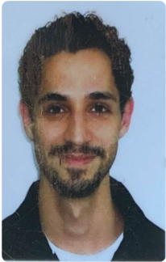

Currículo

Nome: Arthur Santana Cavichioli
Idade: 29 anos
Email: arthurcavic@gmail.com
Telefone: (11) 94892-1850
Naturalidade: São Paulo - SP
Endereço: Uberlândia - MG
Formação
Técnico em Enfermagem - (2012)
Especialização em Instrumentação Cirúrgica - (2019)
Cursando Sistemas para Internet - IFTM - (Cursando)
Experiências
Técnico em Enfermagem - Hospital Sepaco - (2017 ~ 2019)
Instrumentador Cirúrgico - PJ - (2020 ~ 2023)
Técnico em Informática - Martins Atacado - (2023 ~ 2025)
Hobbies
Nadar
Estudar Piano e Canto
Jogar PC e PS
Ouvir rádio de notícias
Links
Aquatic Ambiance - Music
G1
Tibia